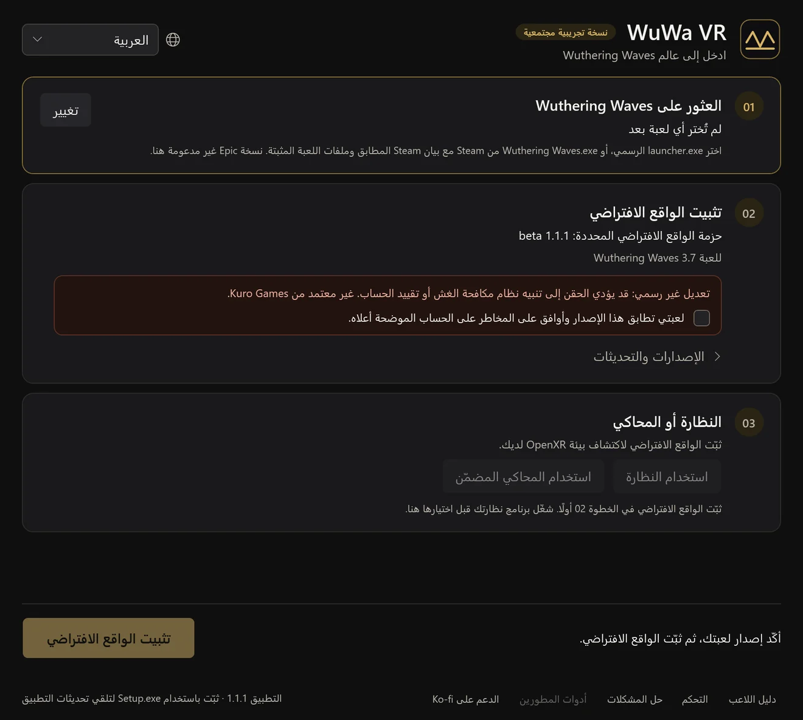
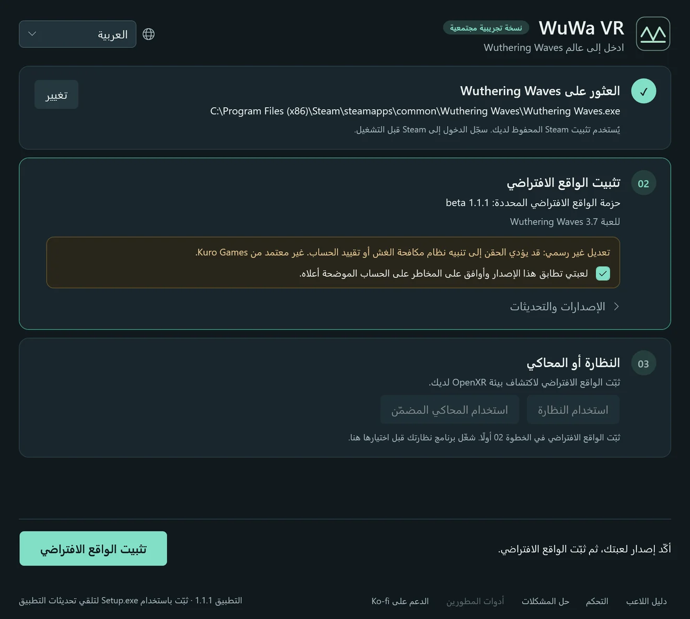
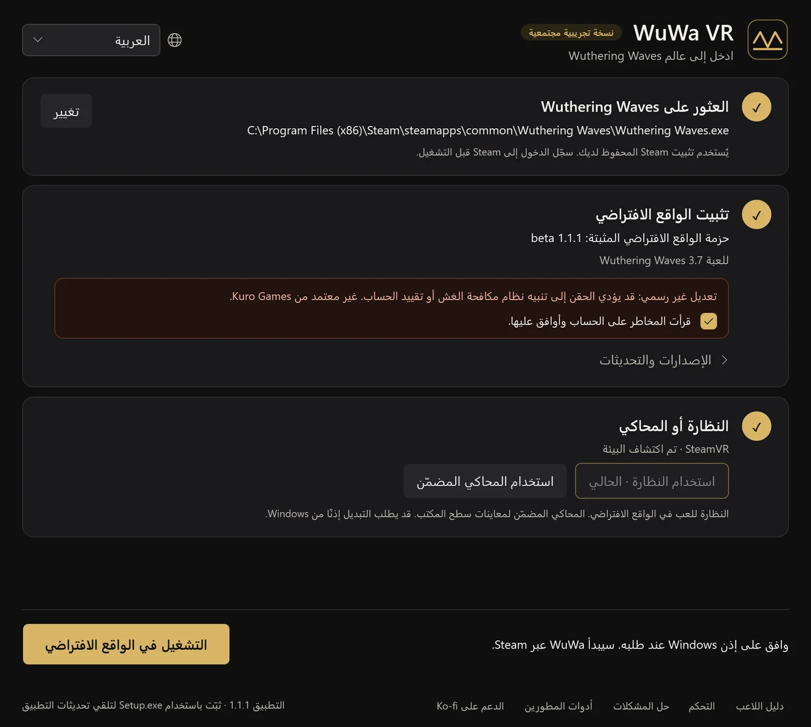

نسخة تجريبية مجتمعية1.1.1 · Wuthering Waves 3.7
ادخل إلى عالم Wuthering Waves
مود واقع افتراضي مجاني من صنع المعجبين لنظام Windows. تجوّل في Solaris-3 بحجمها الحقيقي مع تتبّع الرأس وجسد بمنظور الشخص الأول واختصارات يد التحكم. مبني على UEVR من praydog.
ثبّت، ثم ثلاث خطوات
شغّل WuWa-VR-Setup.exe وافتح WuWa VR، وسيرشدك المشغّل في الباقي. يُنزَّل مود الواقع الافتراضي عند التثبيت الأول، ولا حاجة إلى Python أو أدوات أخرى.
العثور على Wuthering Waves
اختر نسخة اللعبة من Steam أو من مشغّل Kuro الرسمي. يُحفظ اختيارك. لا يتوفر دعم Epic بعد.
تثبيت الواقع الافتراضي
اقرأ تنبيه المخاطر على الحساب، وأكّد إصدار اللعبة، ثم ثبّت. تحتفظ التحديثات بإعداداتك ونسخك الاحتياطية.
النظارة أو المحاكي
شغّل برنامج نظارتك أو اختر المحاكي المضمّن. ثم اختر التشغيل في الواقع الافتراضي ووافق على إذن Windows.






شاشات حقيقية من المشغّل، عرضها التطبيق بالعربية. ستختلف المسارات وبيئة التشغيل لديك.
داخل اللعبة، يفتح L3 + R3 إعدادات UEVR. توجد خيارات WuWa في VR → WuWa Controls. الدليل الكامل للإعداد والتحديث والاستعادة (بالإنجليزية)
صُمّم للّعب، لا للمشاهدة فقط
واقع افتراضي مجسّم وتتبّع للرأس
عمق حقيقي في نظارات OpenXR. تبقى القوائم وواجهة اللعب قابلة للاستخدام، ويمكنك نقل الواجهة أو تغيير حجمها أو إخفاؤها.
مصمّم ليد التحكم
اختصارات لـ Xbox وأخرى تجريبية لـ PlayStation، مع لوحة اختصارات داخل الواقع الافتراضي عبر L3 + Menu.
جسد بمنظور الشخص الأول
شاهد يدي شخصيتك وملابسها مع إخفاء الرأس. متابعة الحركة اختيارية، مع وضع راحة مدمج.
كاميرات حرة
كاميرا حرة وطائرة مسيّرة وطائرة وزوايا بهلوانية للاستكشاف والتقاط الصور. تجريبية.
نافذة 6DOF
وضع نافذة اختياري يضع اللعبة داخل غرفتك. مقتبس من عمل Elliott Tate.
تطابق العينين
تتطابق الأشجار البعيدة والأشياء والإضاءة غير المباشرة في كل عين، فيبدو العالم مشهدًا واحدًا.
منظور الشخص الأول، حتى حركة الانتظار
انظر إلى الأسفل وستجد شخصيتك: اليدين والملابس وحركات الانتظار بحجمها الحقيقي. أخفِ عظام الرأس واحتفظ بالجسد، أو تابع الحركة الكاملة لمنظر أكثر حيوية.
سجّل مقاطعك بدقة عالية (بالإنجليزية)خطوة بخطوة: منظور الشخص الأول، وصورة نظيفة، والمسجّل المدمج.اختصارات Xbox الأساسية
L3 وR3 يعنيان الضغط على عصا التحكم. View هو زر المستطيلين، وMenu زر الخطوط الثلاثة. يبقى LB + Y لوظيفة اللعبة المعتادة.
| L3 + R3 | فتح إعدادات UEVR أو إغلاقها |
|---|---|
| L3 + B | إظهار واجهة اللعبة والقوائم أو إخفاؤها |
| L3 + A | إعادة توسيط المنظور أو النافذة |
| L3 + Menu | إظهار ورقة الاختصارات أو إخفاؤها |
| L3 + LB | تبديل ضبط الواجهة أو الفأرة ثم ترك الأزرار (النسخ المرشحة الأحدث) |
| L3 + View | تشغيل منظور الشخص الأول أو إيقافه |
| Double R3 | تشغيل الكاميرا الحرة أو إيقافها |
| L3 + RB | كاميرا اللعبة أو الكاميرا الثابتة |
الأسئلة
ما النظارات التي تعمل؟
يستخدم WuWa VR معيار OpenXR. جُرّب اللعب على Quest Pro عبر SteamVR، ويُتوقع أن تعمل نظارات OpenXR الأخرى لكنها لم تُختبر بعد. يتيح لك المحاكي المضمّن التجربة على شاشة عادية.
Steam أم مشغّل Kuro أم Epic؟
يدعم Steam ومشغّل Kuro الرسمي. لا يتوفر دعم Epic بعد.
هل يمكن تقييد حسابي؟
نعم، هذا ممكن. يُحقن المود في اللعبة وقد يكتشفه نظام مكافحة الغش. لم توافق عليه Kuro Games. اقرأ تنبيه المخاطر قبل التثبيت.
يحذّر Windows من المثبّت. هل هذا متوقع؟
المثبّت غير موقّع رقميًا، لذا قد يحذّر SmartScreen. نزّله فقط من إصدار المشروع على GitHub وقارن مجموع التحقق SHA-256. لا تعطّل مكافحة الفيروسات أو مكافحة الغش أبدًا.
كيف تعمل التحديثات؟
يتحقق التطبيق من تحديثاته بنفسه ويسألك قبل إعادة التشغيل. تُحدَّث حزم الواقع الافتراضي بشكل منفصل في الخطوة 02، ويمكنك الرجوع إلى إصدار مثبّت سابقًا.
هل يغيّر ملفات اللعبة؟
لا. لا يمسّ المشغّل ملفات اللعبة؛ يُحقن مود الواقع الافتراضي عند التشغيل.
كيف ألغي التثبيت؟
استخدم حل المشكلات ← التحضير لإلغاء التثبيت في التطبيق، ثم أزِل WuWa VR من إعدادات Windows ← التطبيقات. تبقى الإعدادات والنسخ الاحتياطية والتسجيلات ما لم تحذفها.
هل هو مجاني؟
نعم. إنه مشروع معجبين مجاني، والمشغّل مفتوح المصدر بترخيص MIT. الدعم على Ko-fi اختياري ولا يشتري أي ضمانات.
قيود معروفة
- ما زال التشغيل عبر Steam يفشل على بعض الأجهزة، والإصلاح قيد الاختبار. مسار مشغّل Kuro الرسمي هو الأكثر اختبارًا.
- قد يتوقف تحميل بعض المشاهد والحوارات، وقد تظهر خلفية متحركة خلف القوائم المسطّحة.
- تحديث نسبة أبعاد الواجهة غير موثوق، وما زالت بعض إضاءة الشخصيات والانعكاسات والضباب بحاجة إلى اختبار.
- التبديل التلقائي إلى المشاهد السينمائية تجريبي ومعطّل افتراضيًا، ولم يُختبر مع فيديو مُعدّ مسبقًا.
مفتوح المصدر، وتنزيلات يمكن التحقق منها
مشغّل سطح المكتب مفتوح المصدر بترخيص MIT، وتعديلاتنا على المود منشورة. يأتي كل إصدار مع الشيفرة المصدرية المطابقة ومجاميع تحقق SHA-256.
لم يتم التحقق بعد من تقارير VirusTotal لهذا الإصدار. لا ندّعي فحصًا نظيفًا أو شهادة أمان.
ساهم في تحسين المشروع
اكتب باللغة التي تفضلها. جهّز مسودة وراجعها على GitHub ثم أرسلها بنفسك. الموقع لا ينشر تلقائيًا. الإرسال على GitHub يحتاج إلى تسجيل الدخول؛ نسخ المسودة لا يحتاج إلى حساب.
لم يتم ربط مستودع GitHub العام بعد. يمكنك نسخ المسودة لكنها لم تُرسل.
مسودتك — راجعها قبل المشاركة
مبني على عمل المجتمع
يعتمد WuWa VR على عمل praydog والمساهمين في UEVR، وmirudo2 وpolar وSannpoKun وIndath وendlessfalls وElliott Tate.